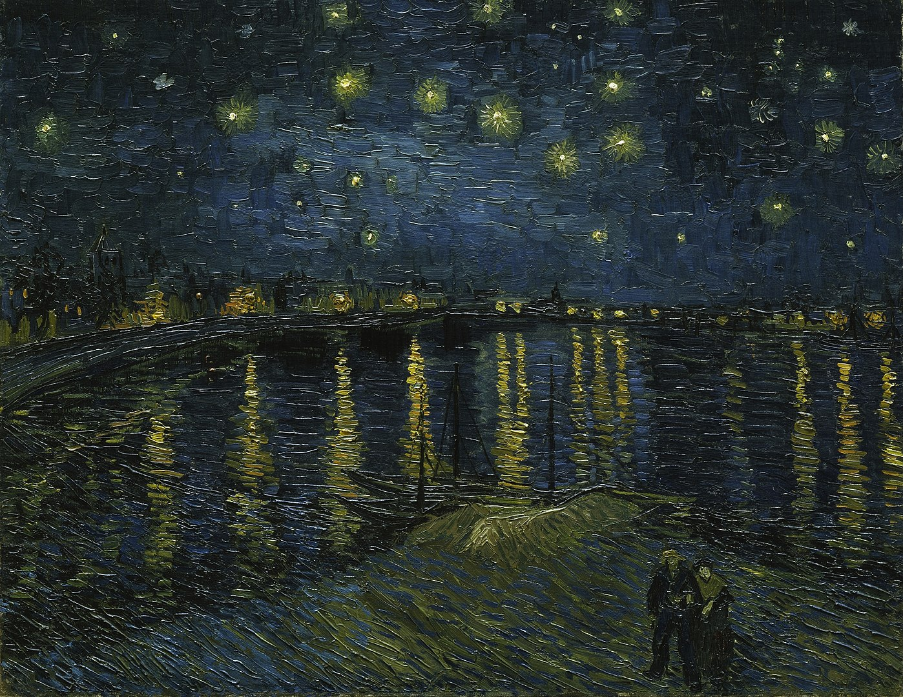
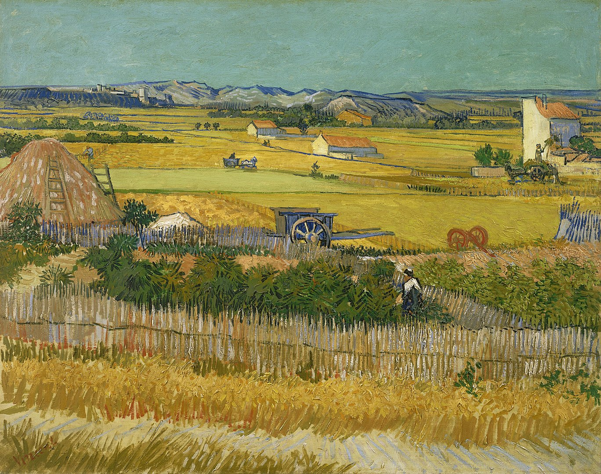

Galeria



Biografia
Vincent van Gogh, urodzony 30 marca 1853 roku w Zundert w Holandii, to
jedno z najbardziej ikonicznych imion w historii sztuki. Jego krótka,
burzliwa życiowa podróż była jednocześnie pełna pasji artystycznej i
wewnętrznych zmagań.
Vincent zaczął swoją drogę artystyczną jako handlowiec, pracując w
firmie sztuki i książek. Jednakże, zainspirowany powagą życia,
postanowił poświęcić się malarstwu. Początkowo eksperymentował z
różnymi stylami, ale to okres pobytu w Paryżu wpłynął najbardziej na
jego rozwój artystyczny.
W ciągu swojego krótkiego życia, van Gogh stworzył ponad 2,000 dzieł
sztuki, w tym takie ikony jak "Gwiaździsta noc", "Słoneczniki", czy
"Żniwa". Jego niekonwencjonalne podejście do kolorów i techniki
malarskiej wpłynęło na rozwój ekspresjonizmu.
W ciągu swojego krótkiego życia, van Gogh stworzył ponad 2,000 dzieł
sztuki, w tym takie ikony jak "Gwiaździsta noc", "Słoneczniki", czy
"Żniwa". Jego niekonwencjonalne podejście do kolorów i techniki
malarskiej wpłynęło na rozwój ekspresjonizmu.
Vincent van Gogh stał się symbolem artysty, który przekracza granice
konwencji, eksplorując głęboko ludzką psychikę poprzez swoje
niepowtarzalne spojrzenie na świat. Jego prace, choć niezrozumiane za
życia, dzisiaj inspirują i poruszają tych, którzy zatrzymują się, by
podziwiać jego niezwykłe dzieła.
Dzieła
| Dzieło sztuki | Czas powstania |
| Gwiaździsta noc | 1889 |
| Słoneczniki | 1889 |
| Żniwa w La Crau z Montmajour w tle | 1888 |
| Gwiaździsta noc nad Rodanem | 1888 |
| Czaszka z palącym się papierosem | 1885/1886 |
Ciekawostki
- Van Gogh zaczął malować dopiero w wieku 27 lat
- Pomimo, że van Gogh malował tylko przez 10 lat, od 27 roku życia aż do przedwczesnej śmierci w wieku 37 lat, stworzył w tym czasie ponad 900 obrazów.
- Wielu ekspertów uważa, że an Gogh odciął sobie ucho podczas szaleńczej kłótni z kolegą malarzem Paulem Gauguinem. 3 grudnia 1888 roku van Gogh w przypływie wzburzenia, obciął sobie brzytwą ucho i wręczył je miejscowej prostytutce.
- Za życia van Gogh nie doczekał się sławy i uznania na jakie zasługiwał. Dlatego po jego śmierci, żona jego brata – Johanna, oddała się pracy na rzecz rozsławienia twórczości malarza.